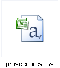
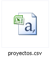
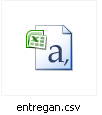
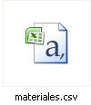
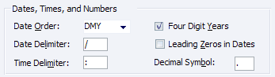
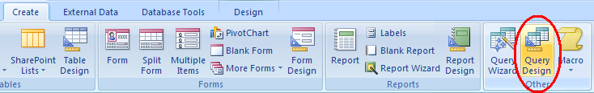

Laboratorio 9: Bases de Datos de Escritorio (MS Access)
Modalidad
Individual.
Objetivos de aprendizaje
- Usar un DBMS (Database Management System) de escritorio, Microsoft Access, para presentar algunas de las actividades necesarias para administrar bases de datos.
Nota: Las imágenes de este laboratorio fueron hechas usando Microsoft Access 2007
Instrucciones
-
Crear una base de datos
La primera actividad en el proceso es crear una base de datos. En esta actividad se establece el lugar o espacio en el que físicamente será alojada una base de datos. En el caso de MS Access, el procedimiento es muy sencillo:
- Iniciar el programa de Microsoft Access.
- Selecciona crear una base de datos en blanco.
- Selecciona la ruta (path) en que será creada la base de datos.
- Deberás usar la extensión .mdb solo para Access 2003, para la versión 2007 puedes usar la extensión .accdb
- Indica el nombre para la base de datos (te recomiendo usar tu matrícula) con la extensión .mdb
Crear tablas
Una definición operativa simple de base de datos relacional es "colección de tablas interrelacionadas". De aquí que una de las tareas básicas en la administración de bases de datos consista en crear y modificar tablas.
En el fólder de tablas de la base de datos que acabas de crear, utiliza el botón Nuevo y la opción Vista Diseño para crear las siguientes tablas, seleccionando como llave la columna subrayada.
En la versión 2007 una tabla será creada por default, simplemente en View cambia a Design View y te pedirá el nombre de la tabla para salvarla.
Nota: Para seleccionar una columna como llave, una vez que hayas definido su nombre y tipo, posiciónate sobre ella y has click sobre "Clave Principal", este es un ícono en forma de llave de la barra de herramientas. En la versión 2007 por default ya viene incluida una clave principal, la cual tiene el ícono de una llave en su lado derecho.
Tabla: Materiales
Columna Tipo Clave Numérico (entero largo) Descripción Texto (100 caracteres) Precio Numérico (simple)
Tabla: Proyectos
Columna Tipo Número Numérico (entero largo) Denominación Texto (100 caracteres)
Tabla: Proveedores
Columna Tipo RFC Texto (15 caracteres) RazonSocial Texto (100 caracteres)
Tabla: Entregan
Columna Tipo Clave Numérico (entero largo) RFC Texto (15 caracteres) Número Numérico (entero largo) Fecha Fecha/Hora Cantidad Numérico (entero largo) Importante: Ten cuidado con el campo Fecha, ya que es neceario definirlo con formato de fecha corta, ya que los datos de origen tienen definido ese formato de fecha.
Tip: Para definir una llave de varias columnas, selecciona cada columna en el área gris situada a la izquierda del nombre de la columna, oprimiendo la tecla Shift. Cuando todas las columnas estén seleecionadas, oprimir el ícono de la llave.
Establecer las relaciones entre tablas.
Es muy conveniente que las relaciones entre tablas se establezcan desde un principio. este caso, la tabla Entregan tiene relaciones con las otras tres tablas que definimos. En la opción Herramientas --> Relaciones, se definen estas relaciones.
Agregar todas las tablas a la definición de relaciones.
Para definir la relación entre Materiales y Entregan, selecciona la columna Clave de Materiales y arrastra el cursos hasta la columna Clave de Entregan. Es muy importante que sea en este órden. Marca el Check Box de Exigir Integridad Referenciada, concepto que revisaremos posteriormente.
Por analogía, define las relaciones con Proyectos y Proveedores con Entregan.
Carga de datos.
Otra actividad frecuente en la administración de bases de datos consiste en cargar datos a las tablas, provenientes de otros sistemas o sencillamente de archivos que se han creado para este efecto.
Los datos que vas a incorporar en cada tabla se encuentran en los siguientes archivos, descárgalos en tu computadora.
   Nota: Chrome abre los documentos en lugar de descargarlos, utiliza otro buscador o guarda los archivos con click derecho ---> Descargar archivo enlazado.
Los archivos csv son archivos de texto que tienen renglones en los que cada renglón corresponde a un registro o renglón de la tabla y en cada uno de estos renglones, los valores correspondientes a cada columa están separados por comas en estos archivos.
Cargar datos de archivos .csv
Versión (2003) Archivo --> Obtener datos externos --> ImportarSelecicona en tipo de archivo Text Files
Un wizard te irá proponiendo opciones para cargar el archivo correspondiente. Estas son las respuestas a cada paso:
- Selecciona la opción "Delimitado", ya que las columnas están separadas por coma.
- Ahora te pregunta por el tipo de delimitador, para estos archivos es "coma". Asegúrate de que no esté seleccionada la opción "Primera fila contiene nombres de campos", esto porque los archivos solo contienen datos. La opción de cualificador de texto debe estar en "Ninguno".
- Selecciona la opción de almacenar los datos de una tabla existente: selecciona la tabla con el mismo nombre que el csv correspondiente.
- Terminar la importación.
Importante: Cuando estés en el paso 3 de la tabla Entregan, has click sobre el botón de "Avanzado..." Ahí asegúrate de que en la opción "Orden de la fecha" esté seleccionada la opción "DMA" y "/" como delimitador, que es el formato en el que aparece la fecha en el archivo entregan.csv
(Versión 2007) Primero selecciona cualquier tabla -> External Data -> Text File
- Escoge de qué archivo y de dónde se va a importar.
- Elige la segunda opción: "Append a copy of the records to an existing table" y elige la tabla a donde vas a mandar los datos.
- Escoge la opción de delimitado y en la siguiente pantalla la de coma. En la misma pantalla cuando estés importando los datos de la tabla Entregan.csv aprieta el botón para opciones avanzadas y asegúrate de que la parte de la fecha se vea como en la siguiente imagen.
- 
Verifica el contenido de cada tabla después de la importación.
Definición de consultas.
A fin de proporcionar a cada usuario o grupo de usuarios la información de su interés, una de las tareas del diseñador o administrador de bases de datos es definir consultas que muestran conjuntos de datos que incluyen columnas específicas, renglones específicos que pueden provenir de una tabla o de varias tablas interrelacionadas.
En el folder de Consultas, utilizando el botón Nuevo y la opción Vista Diseño, es posible definir consultas. Para esto, se agrega a la consulta la tabla o tablas involucradas, se seleccionan las columnas que se desea incluir en la consulta y se agregan los criterios que debe cumplir el valor de las columnas a restringir para que el renglón sea incluido.
Para las columnas con tipos de datos numéricos pueden utilizarse criterios como los que se ejemplifican a continuación:
1000 Significa que el valor de la columna debe ser igual a 1000.
> 1000 Significa que el valor de la columna debe ser mayor que 1000.
< 1000 Significa que el valor de la columna debe ser mayor que 1000.
Entre 10 y 100 Significa que el valor de la columna debe ser <=10 y <=100.
Pregunta para pensar: (No es parte de la entrega)Si estuvieras haciendo una búsqueda en un rango de fecha, como buscarías todo los datos del año 2000?
Para las columnas con tipo de datos de texto, se utilizan criterios como los que se ejemplifican a continuación:
"ABC" Significa que el valor de la columna debe ser igual a "ABC".
>"A" Significa que el valor de la columna debe ser mayor que "A" en el orden alfabético.
Como "*ABC*" Significa que el valor de la columna debe contener el patrón "ABC". Los asteriscos son "comodines", es decir "ABC*" significa que inicia con "ABC", "*ABC" significa que termina con "ABC" y "*ABC*" significa que tiene ABC en cualquier parte del valor de la columna.
Define las siguientes consultas y guárdalas con el nombre que se indica:
Consulta Tuberías
Clave, descripción y precio unitario de los materiales cuya descripción contenga el patrón "Tub".
Consulta Caros
Clave, descripción y precio unitario de los materiales cuyo precio es mayor que 300 pesos.
Consulta Proveedores Ladrillos
Aquí tendrás que agregar las tablas: materiales, entregan y proveedores. En la parte de abajo seleccionar las columnas que quieras que aparezcan así como sus condiciones.
Clave del material y razón social de los proveedores que entregan productos cuya descripción contiene el patrón "Ladrillos"
Consulta Pinturas98
Aquí tendrás que agregar todas las tablas. En la parte de abajo seleccionar las columnas que quieras que aparezcan así como sus condiciones.
Descripción del material, razón social del proveedor, denominación del proyecto, fecha y cantidad de las entregas de pinturas realizadas durante 1998.Especificaciones de entrega
A través de Bitbucket o GitHub con el nombre matricula.mdb para archivo de Access 2003 o matricula.accdb para archivo de Access 2007.